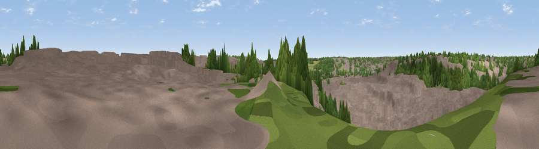

Viewpoint near Luton
#46004 in England · top 97% of its area beats it · near LutonWhere it is
The exact computed spot (TL 11225 21225). Click the marker for map links.
The view, rendered

A 360° render of this exact spot computed from the terrain model, tree cover and land cover — summer colours, afternoon light, calibrated against photographs of famous viewpoints. Real trees, hedges and buildings will differ in detail.
The panorama
Grey silhouette: terrain skyline in each direction (720 bearings, Earth curvature and refraction included). Dashed green: skyline with trees (+15 m) and buildings (+8 m) as obstacles. Blue strip: how far the ground is visible on each bearing.
Where the view opens
Wedge length = distance to the farthest visible ground on that bearing (vegetation-aware). Rings at 10, 25 and 50 km.
What fills the view
80% built-up · 14% woodland · 5% grassland ·
Angular shares of the visible panorama (visual magnitude), not map area. Landscape diversity 0.28 (0–1 Shannon).
Key numbers
More beautiful places nearby
The staircase of upgrades: each row has a higher view potential than everything closer. Driving times are estimates from straight-line distance, calibrated against real road routing — check an actual route before setting out.
| Place | Direction | Drive | Score |
|---|---|---|---|
| Viewpoint near Luton | W · 1 km | ~3 min | 11.6 |
| Viewpoint near Chaul End | W · 4 km | ~9 min | 21.7 |
| Viewpoint near Chaul End | W · 5 km | ~11 min | 25.4 |
| Warden Hill | NNW · 5 km | ~12 min | 52.5 |
| Viewpoint near Dunstable | W · 8 km | ~16 min | 53.7 |
| Viewpoint near Hexton | N · 8 km | ~16 min | 56.7 |
| Viewpoint near Hexton | N · 9 km | ~17 min | 65.4 |
| Beacon Hill | WSW · 16 km | ~28 min | 74.1 |
51.87851, -0.38561 · source: screening · position refined by local search. Computed location — check access rights before visiting.